Четверг 15.10: музей 1923 → Asakusa → Ueno
Asakusa - храм Senso-ji (самый старый в Tokyo), та пятиярусная пагода, что ты видел, торговая улица Nakamise, мост Azuma.
Ueno - большой парк с прудом Shinobazu (там ты гулял после заката), святилище Toshogu и рядом своя старинная пятиярусная пагода, Национальный музей, рынок Ameyoko.
Akihabara → Ryogoku
JR Akihabara: жёлтая Sobu, платформа 6, на Chiba (千葉), 2 остановки: Asakusabashi, Ryogoku. Выход West (西口), ~11 мин пешком на север мимо зала сумо Kokugikan.
Музей землетрясения 1923 года (Fukko Kinenkan)
Небольшой, 2 этажа. Здесь 1 сентября 1923 года огненный вихрь убил до 44 000 человек (Wikipedia). Вещи, фото, картины пожара, зал о бомбардировках 1944-1945, во дворе расплавленный огнём металл. Часы - по справочным сайтам.
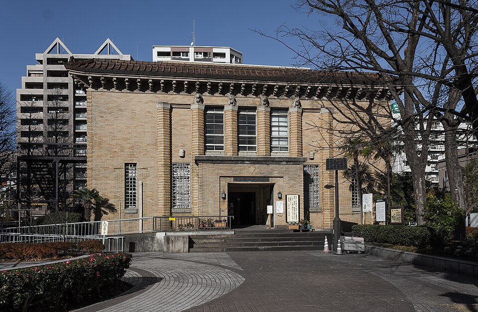

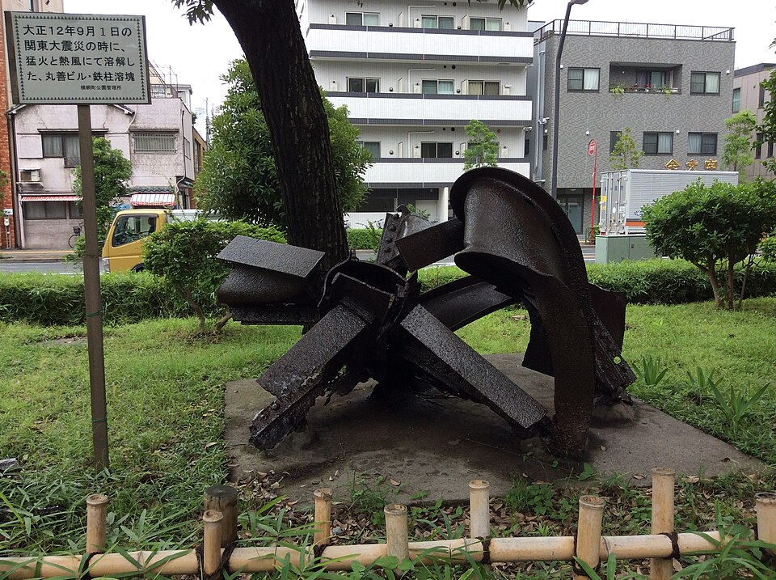

Вдоль реки Sumida к мосту Azuma - днём
На север по набережной до моста Azuma (тот, где ты встретил закат с радугой). Рядом второй мост - пешеходная Sumida River Walk: дорожка 160 м вдоль железнодорожного моста Tobu на другой берег, к Skytree, открыта в 2020 (Toyo Keizai), 7:00-22:00 по данным 2020 года.
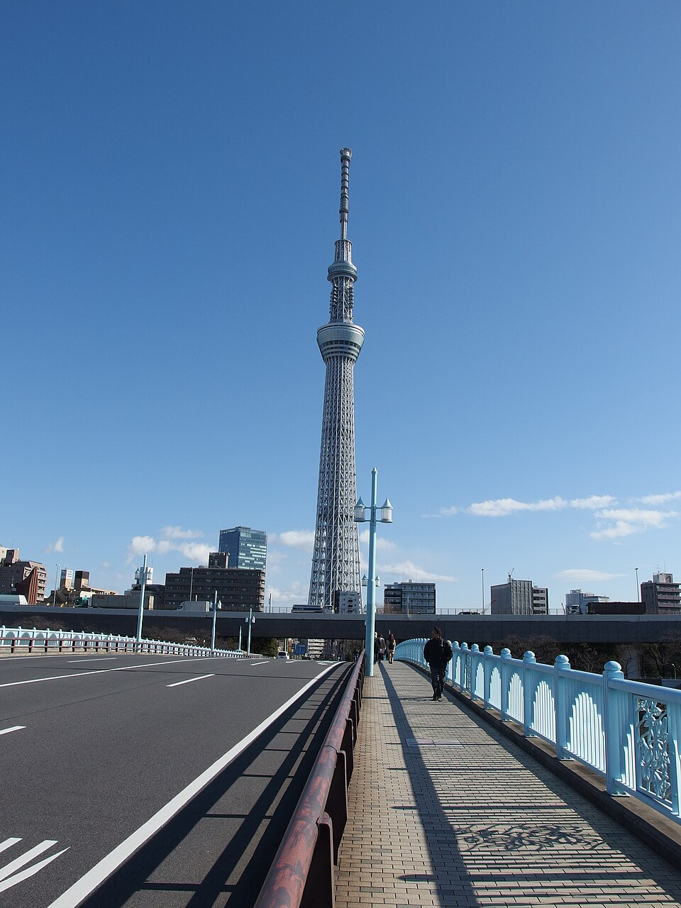
.jpg){kind=link}
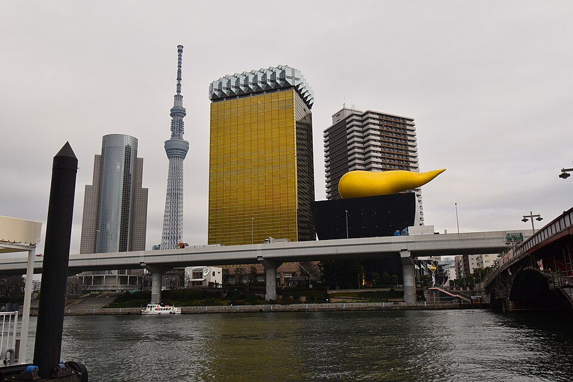

Senso-ji: днём, полностью
Ворота Kaminarimon → улица Nakamise → ворота Hozomon → главный зал (6:30-17:00) → пятиярусная пагода. Обед в Asakusa: соба или темпура. История - ниже, в заметках.
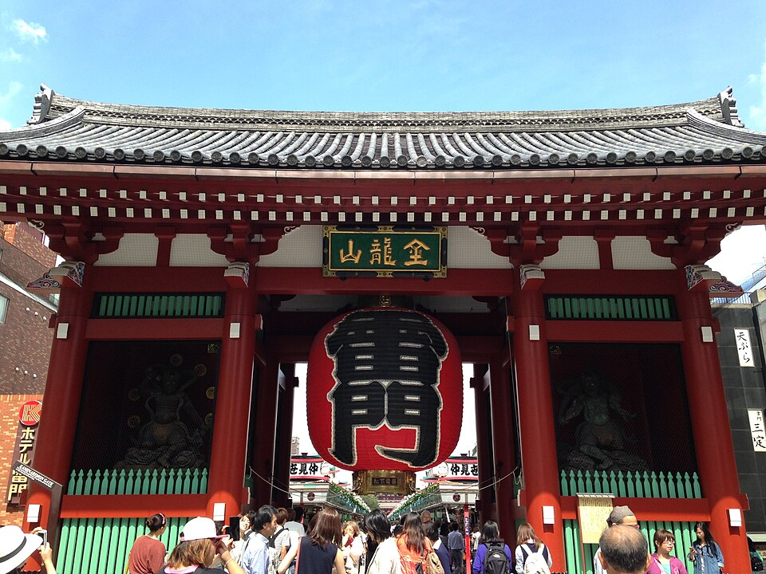

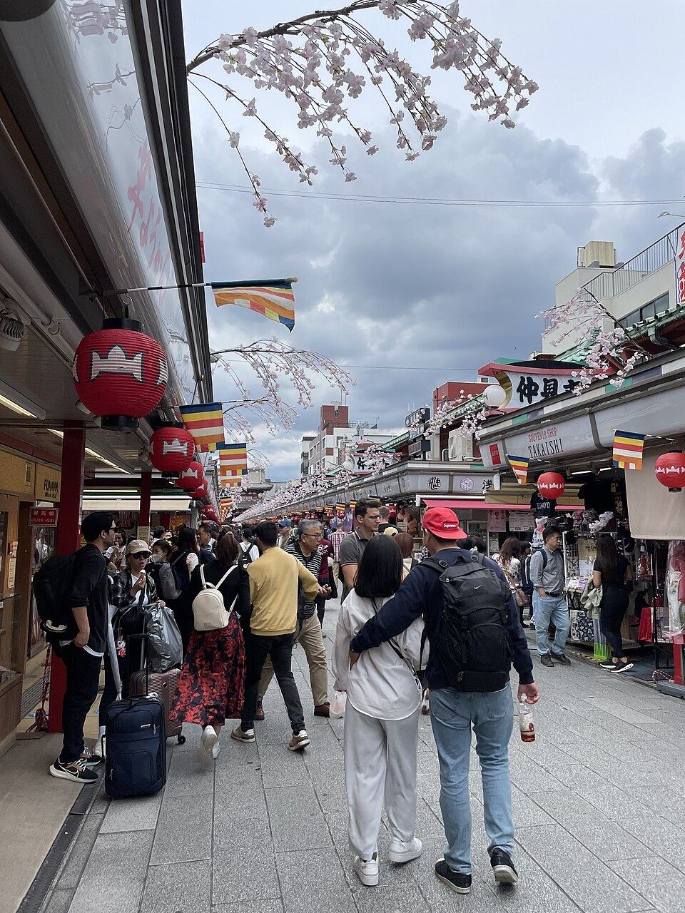

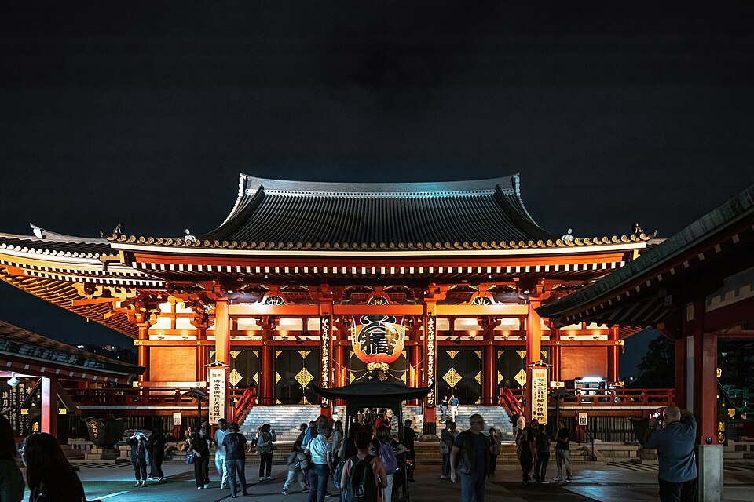

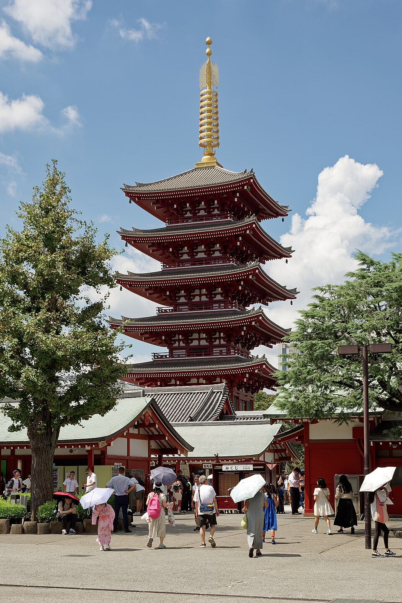

Kappabashi - «кухонный город» (по желанию)
Улица лавок посуды, ножей и пластиковой еды для витрин, на полпути от Senso-ji к Ueno. Можно просто пройти насквозь.
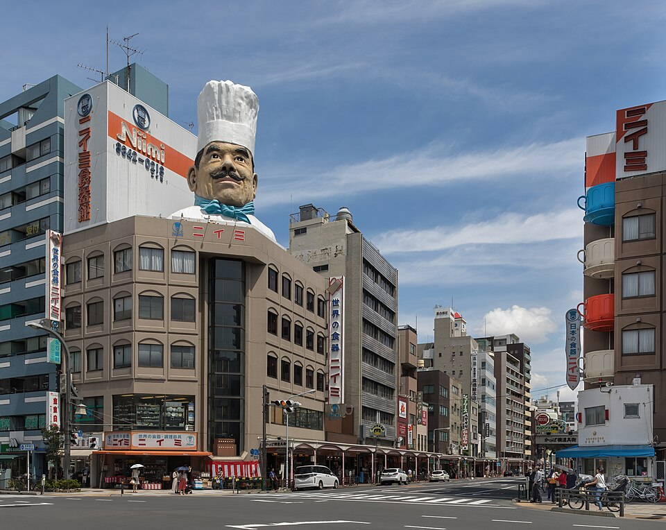
_a_sunny_morning_in_Tokyo_Japan.jpg){kind=link}
Парк Ueno при солнце
Святилище Toshogu (9:00-16:30), рядом старинная пятиярусная пагода (стоит за оградой зоопарка, видна с дорожки), пруд Shinobazu с храмом Bentendo на острове. Если хочется музей - Tokyo National Museum до 17:00, 1 000 ¥. Метро вместо пешком: Ginza line от Asakusa (конечная, любой поезд), 3 остановки до Ueno.

.jpg){kind=link}

.jpg){kind=link}

.jpg){kind=link}
Закат: пруд Shinobazu или лестница Yuyake Dandan
Остаться у пруда или пройти ~24 мин в Yanaka на «ступени заката» Yuyake Dandan над улочкой Yanaka Ginza.
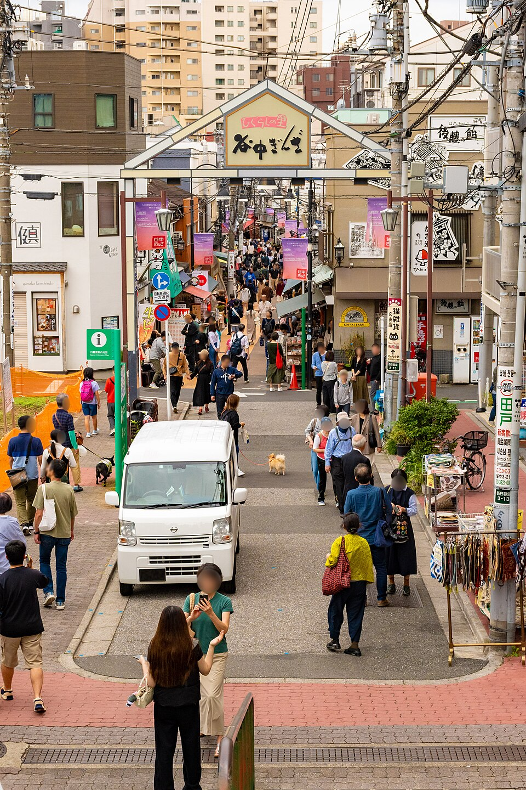
.jpg){kind=link}
Рынок Ameyoko, ужин, домой
Рынок вдоль путей у станции Ueno. Домой пешком ~22 мин или JR 3 мин до Akihabara.

.jpg){kind=link}
Senso-ji: история по датам
| 628 | Легенда: братья-рыбаки Hinokuma Hamanari и Takenari вылавливают в реке Sumida статуэтку богини милосердия Kannon. Староста деревни Haji no Nakatomo принимает монашество и делает из своего дома храм. |
| 645 | Монах Katsumi перестраивает храм и делает статуэтку тайной (hibutsu): её не показывают никому. Говорят, она золотая, около 5,5 см. |
| 940-е | Taira no Kinmasa перестраивает храм; впервые появляются ворота Kaminarimon и будущие Hozomon. |
| 1631, 1642 | Пожары. Сёгун Tokugawa Iemitsu отстраивает пагоду (1648) и главный зал (1649). |
| 1685 | На подходе к храму появляются лавки - будущая улица Nakamise. |
| 1865 | Ворота Kaminarimon в очередной раз сгорают. |
| 10 марта 1945 | Бомбардировка Tokyo: сгорают главный зал (бывшее «национальное сокровище») и пагода. |
| 1951-1958 | Строят новый главный зал. |
| 1960 / 1964 / 1973 | Восстановлены Kaminarimon (11,7 м) / Hozomon (22,7 м) / пятиярусная пагода. |
Сегодня - больше 30 млн посетителей в год. Значит, основан по легенде в 628, но всё, что ты видишь, - 1958-1973 годов, на старом месте и в старых формах. Источник: Wikipedia (en).
Заметки: что ещё ты называл
| Yanaka и Yanaka Ginza | Тихий старый район рядом с Ueno: большое кладбище с аллеями, храмы, улочка Yanaka Ginza (~60 лавок) и лестница Yuyake Dandan. Интерес - спокойная прогулка «как жили раньше», не достопримечательность. Подробнее |
| «Японский музей» | Tokyo National Museum в парке Ueno: самый старый и большой музей Японии, мечи, ширмы, древние фигуры. 9:30-17:00, 1 000 ¥, с чемоданами не пускают. Подробнее |
| Дворец внутри (экскурсия) | Бесплатно, вт-сб, утром и днём, ~2,2 км, около 1 ч 15 мин (памфлет Управления двора). Онлайн-запись закрывается за 4 дня, на чт/пт - только в тот же день: талоны у ворот Kikyomon с 9:00 (утро) и с 12:30 (день), до 300 человек, нужен паспорт. Видно: башню Fujimi-yagura, здание Управления двора, площадь перед дворцом и мост Nijubashi изнутри. Языки на сайте не указаны. Моё мнение: ты уже видел сад, стены и Nijubashi снаружи - экскурсия добавит немного; брать, только если хочется постоять на самом мосту. |
| Рынок Ameyoko | Скорее всего, ты проходил его 13.10 по пути от станции Ueno. В плане - вечером. |
| Kappabashi | По пути Senso-ji → Ueno, пункт 4. |
| Мост Azuma | Понравился на закате с дождём и радугой. Днём - пункт 2, плюс пешеходная Sumida River Walk рядом. |
| Marunouchi, руфтоп 7 этажа | Похоже, это терраса Marunouchi House на 7 этаже здания Shin-Marunouchi: рестораны, вид на вокзал, 11:00-23:00 (вс до 22:00). Днём тоже открыто. Рядом бесплатная крыша KITTE Garden (6 этаж) с видом на Tokyo Station сверху; часы у источников разные. |
| Shinjuku Gyoen | Ты там не был. См. ниже. |
Shinjuku Gyoen - ты там ещё не был
Один из самых больших и красивых парков Tokyo, 58,3 га. Здесь с 1590 года была усадьба князей Naito; по проекту француза Henry Martinet из Версальской школы садоводства в 1906 году здесь открыли императорский сад (Wikipedia). Сейчас национальный парк: три стиля в одном - регулярный, пейзажный и традиционный японский с прудами, оранжерея (первая - XIX века, нынешняя 2012 года) (официальный сайт). Над деревьями - небоскрёбы Shinjuku. Выходной - понедельник. Идея: если в пятницу ты едешь в горы со станции Shinjuku - утром сад, чемодан в камеру хранения на вокзале, потом поезд.
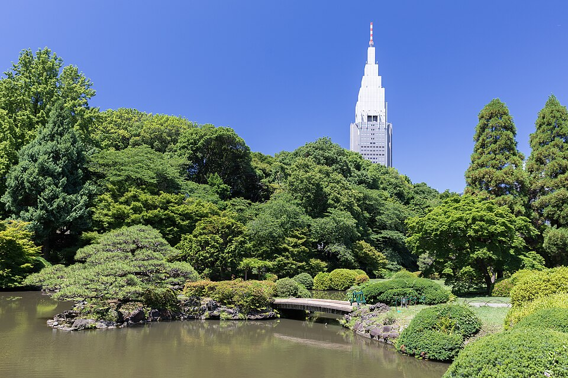

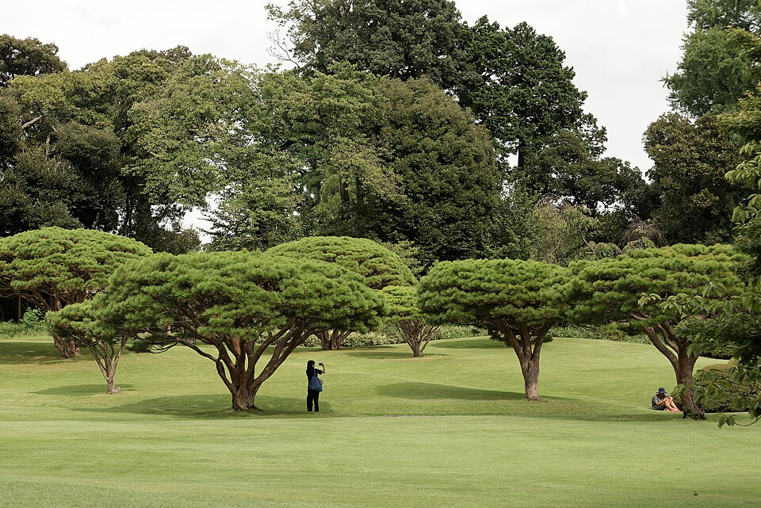